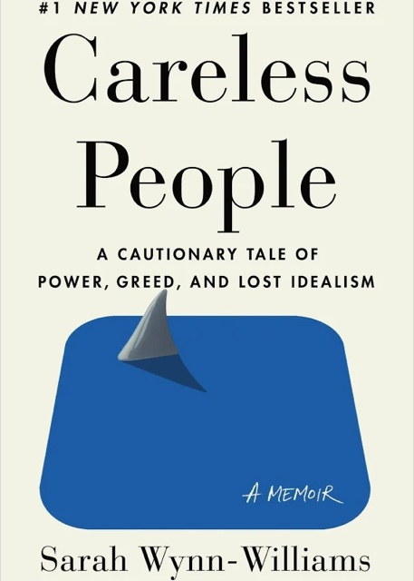

Heyo, I’m Richard
Product designer at Miro
Irish-Dutch designer based in Amsterdam. Building a more equitable future for technology through accessible and intuitive design.
Selected work
About Richard
Sustained by my love for football, travel, animals and a good cup of tea.
About
I’m a multidisciplinary product designer and builder from Limerick, Ireland. Over the years, I’ve taken 0-to-1 products off the ground at Miro, defined product vision for fintech platforms at Cashbook, and scaled design systems and developer tools at SAP.
I design at the intersection of what excites me most: technology, business, and craft. That systems-led mindset started at the University of Limerick, where I earned a BSc in Interaction Design, a blend of user research, psychology, interface craft, and frontend and hardware engineering.
I currently live in Amsterdam, Netherlands and work at Miro. Outside of work: you’ll find me cooking, playing football, reading, or debating whether it’s finally time to get a dog.
Music
Spotify is always on in the background, here are two albums I enjoyed over the last year.
Travel
I love experiencing new places and cultures. I’ve visited 18 countries so far and I’m always planning the next trip.
Reading
A good book and a cup of tea is my favourite way to switch off, here are two books I’m reading right now.


Football
I’ve played football my whole life. Mix of casual games to more competitively on the weekends.
Animals
I’m happiest spending time with animals, especially our two dogs back home in Ireland, Eddie and Jessie.
Snake
Click below to play